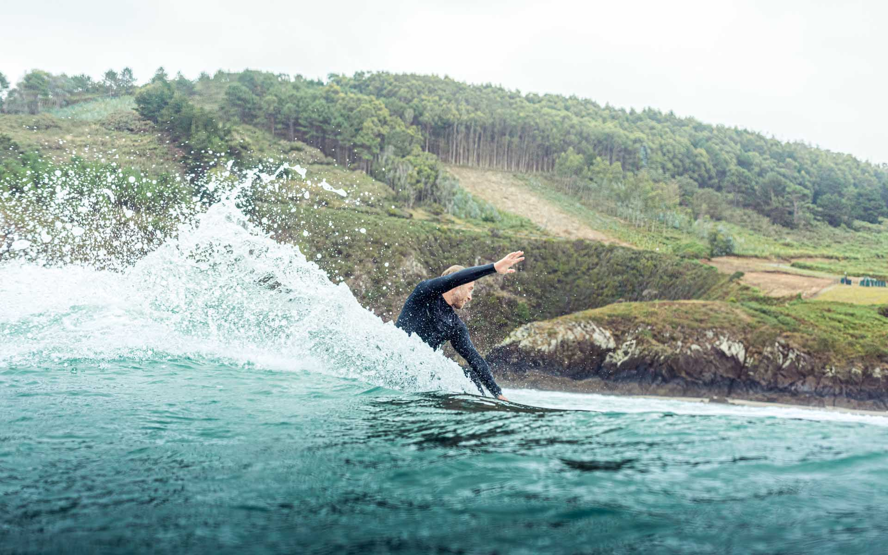

Europas erstes Intermediate Surfcamp für fortgeschrittene Surfer
Du hast bereits einige Erfahrungen im Surfen gemacht und möchtest deine Surftechnik auf das nächste Level bringen? Mit unserem Intermediate Surfcamp in Galicien wirst Du schon bald keine Probleme mehr haben, einen sauberen Bottom Turn oder Cutback in der Welle zu ziehen. In kleinen Gruppen, inklusive Videoanalyse und Bewegungstheorie, bringen Dich unsere erfahrenen Surfcoaches schnell an Dein neues Ziel – und das in einer der schönsten Regionen Nordspaniens!
Wir bieten...
- Europas erstes speziell auf fortgeschrittene Surfer ausgelegtes Surfcamp
- eine Vielzahl an leeren, einsamen Stränden (optimal, um eure Surfskills gezielt zu verfeinern)
- ein auf Deine bisherigen Erfahrungen zugeschnittenes Surfcoaching, mit täglicher Videoanalyse,
Bewegungstheorie und Surfskatesessions
- kleine Gruppen (max. 5 Personen auf einen Coach) mit intensiver Betreuung
- professionelle und erfahrene ISA/ASI lizensierte Surfcoaches
- Spotguiding und Transfer zu mehr als acht verschiedenen Buchten
- konstante Surfbedingungen und leere Line-Ups während der gesamten Saison in einer der schönsten
Regionen Nordspaniens
- ein schönes Camphaus mit familiärer Atmosphäre in dem kleinen Strandort Valdoviño in Galicien
- zu Fuß erreichbarer Hausstrand
- kostenlose Nutzung der Surfboards und Wetsuits 24/7
- eine große Terrasse mit BBQ-Grill
- Gemütliches Wohnzimmer mit Pelletofen zum Aufwärmen nach den Sessions
- großer Garten mit Lagerfeuerstelle und Hängematte, um den Tag gemütlich ausklingen zu lassen
- große und helle Zwei- und Mehrbettzimmer
- verschiedene Chill-Out Areas zum Entspannen
- üppiges und gesundes Frühstück
- Saison vom 23. März bis zum 20. Oktober 2024

Layback Blog
8 Gründe, warum Du ein Intermediate Surfcoaching absolvieren solltestDu hast schon einige Surf-Erfahrung gesammelt und fragst Dich jetzt: Sollte ich wirklich an einem Intermediate Surfcoaching teilnehmen? Hier erfährst Du, warum das Sinn macht…
Mehr erfahrenSurf with friends
Das ist unsere Philosophie und so sollte es in einem Surfcamp auch sein. Wir (eure Surfcoaches) leben mit euch unter einem Dach und stehen euch jederzeit zur Seite – so könnt ihr so schnell wie möglich Fortschritte bei euren Surfskills machen und euer Ziel mit größtmöglichsten Spaß schnell erreichen. Unser schönes familiäres Camphaus in dem kleinen Strandort Valdoviño in Galicien liegt fernab vom Massen- und Surftourismus und bietet eine Vielzahl an verschiedenen Buchten mit hervorragenden Wellen und leeren Line-Ups. Mit unserem Spotguiding bringen wir euch jeden Tag zu dem Strand, an dem ihr die meisten Fortschritte machen werdet. Und falls ihr nach den Sessions immer noch nicht genug habt, könnt ihr an unserem Haustrand in Valdoviño eure letzten Energiereserven verbrauchen oder die Füße gemütlich im Camp oder in unserem großen Garten hochlegen.
Für uns ist Surfen nicht nur eine Sportart.
Surfen ist eine Leidenschaft, Surfen ist Freundschaft, Surfen ist Freiheit und Surfen kann Dein Leben völlig auf den Kopf stellen. Dir geht es ähnlich? Dann komm in unser Intermediate Surfcamp in Nordspanien und genieße einen Urlaub voll mit guten Wellen, traumhaften Stränden, netten neuen Leuten und einer Menge Spaß.